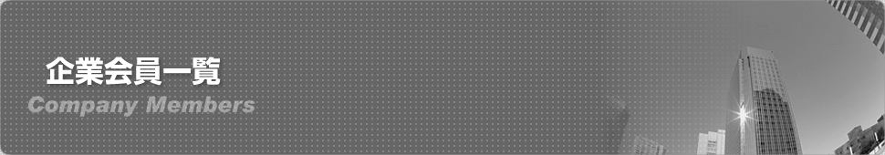
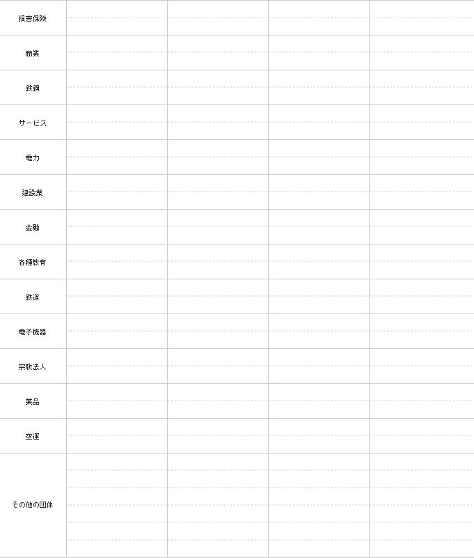
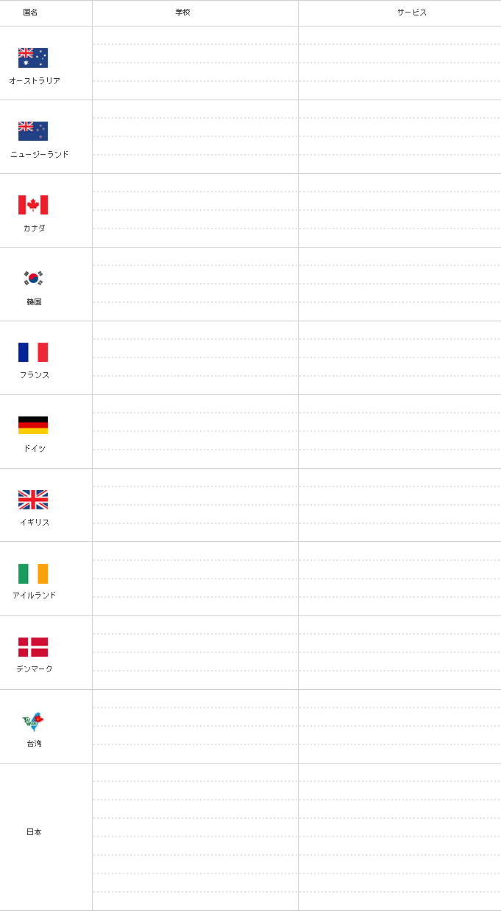

<?php
require_once 'include/header.php';

$header_obj = new Header();

$header_obj->fncFacebookMeta_function=true;

$header_obj->title_page='企業会員一覧';
$header_obj->description_page='ワーキングホリデー（ワーホリ）協会の活動にご賛同頂いている団体・企業の方々のご紹介です。ワーキングホリデー（ワーホリ）協定国の最新のビザ取得方法や渡航情報などを発信しています。また、ワーキングホリデー（ワーホリ）をされる方向けの各種無料セミナーを開催しています。オーストラリア、ニュージーランド、カナダ、韓国、フランス、ドイツ、イギリス、アイルランド、デンマーク、台湾、香港でワーキングホリデー（ワーホリ）ビザの取得が可能です。ワーキングホリデー（ワーホリ）ビザ以外に学生ビザでの留学などもお手伝い可能です。';

$header_obj->fncMenuHead_imghtml = '';
$header_obj->fncMenuHead_h1text = '日本ワーキングホリデー協会にご協力頂いている企業会員一覧';

$header_obj->display_header();

?>
	<div id="maincontent">
	  <?php echo $header_obj->breadcrumbs(); ?>

	  <h2 class="sec-title">企業会員一覧</h2>


	  <p class="text01">一般社団法人日本ワーキング・ホリデー協会は、会員企業・団体のご協力を得て運営されております。</p>

<!--
	  <h2></h2>
	  <p class="text01">一般社団法人日本ワーキング・ホリデー協会は、下記会員企業・団体のご協力を得て運営されております。</p>
	  
	  <h2></h2>
	  
	  <h2></h2>
	  
-->
   
	  <div class="top-move">
	    <p><a href="#header">▲ページのＴＯＰへ</a></p>
	  </div>
	</div>
  </div>
  </div>

<?php fncMenuFooter($header_obj->footer_type); ?>

</body>
</html>